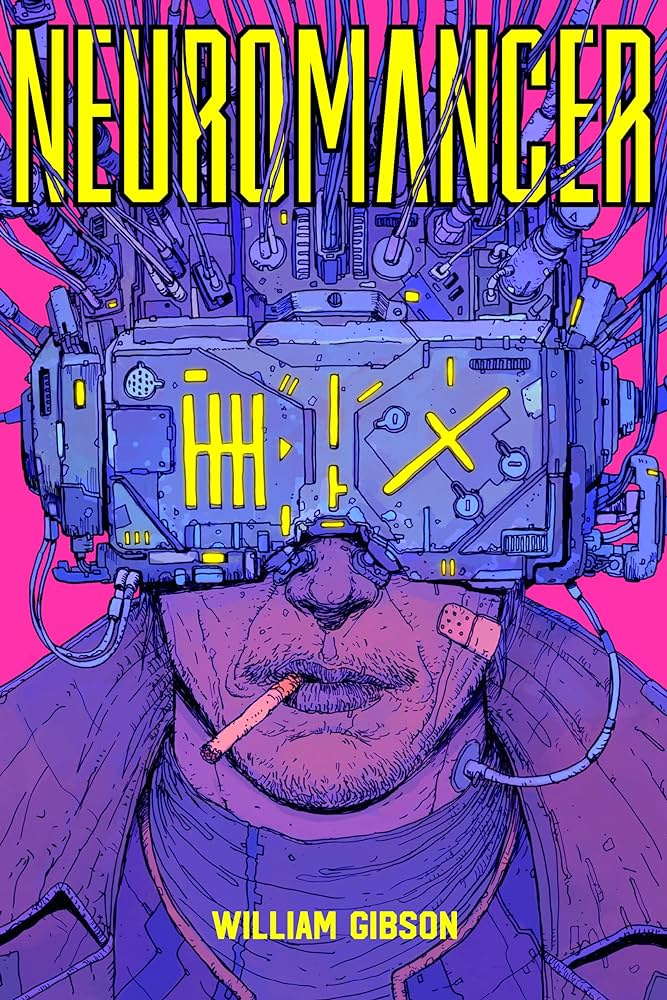
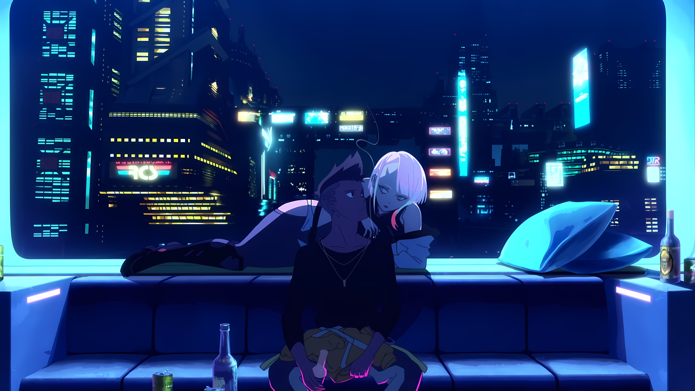

Olá criei está paginá para aplicar minhas skills de desenvolvimento web e apresentar um tema interessante que é cyberpunk, alguns dos conteudos abaixo voce consegue clica-los e acessa-los de forma oficial.
O cyberpunk é um subgênero da ficção científica que explora as implicações sociais e culturais da tecnologia avançada, geralmente ambientada em um futuro distópico. O gênero é caracterizado por elementos como:
- Um futuro distópico: um mundo de desigualdade social, violência, corrupção e crime.
- Personagens anti-heróis: geralmente são indivíduos marginalizados ou fora da lei que lutam contra o sistema.
O cyberpunk surgiu nos anos 1980, com obras como o romance Neuromancer, de William Gibson, e a graphic novel Blade Runner, de Moebius e Jean Giraud. Desde então, o gênero se tornou popular em diversos meios de entretenimento, incluindo:
Literatura: obras como Neuromancer, Androids Dream of Electric Sheep?, Ghost in the Shell e Snow Crash são alguns dos clássicos do cyberpunk.
- Cinema: filmes como Blade Runner, The Matrix, Johnny Mnemonic e Alita: Battle Angel são alguns dos exemplos mais conhecidos do gênero.
- Séries: séries como Altered Carbon, Black Mirror, Ghost in the Shell: SAC_2045 e Cyberpunk: Edgerunners exploram o cyberpunk de diversas maneiras.
- Jogos eletrônicos: jogos como Cyberpunk 2077, Deus Ex, Shadowrun e Ghostrunner são alguns dos exemplos mais populares do gênero.

O cyberpunk continua a ser um gênero popular e influente, explorando temas como a tecnologia, a sociedade e a identidade humana. O gênero é frequentemente usado para criticar o capitalismo, o consumismo e a desigualdade social.